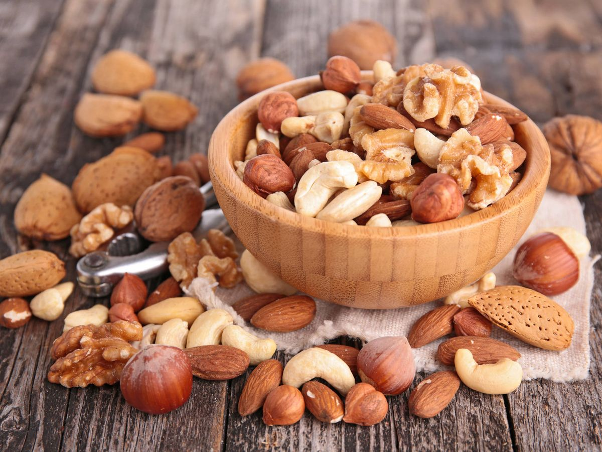

Mas que una dietética.
¿sabías que una alimentación saludable puede ayudar a prevenir enfermedades como la diabetes y el cáncer?
Además, una dieta equilibrada y rica en nutrientes también puede ayudarte a mantener fuerte tu sistema inmune.
Si pensamos en nuestro organismo como una máquina, sin dudas, la comida sería el combustible que la hace funcionar correctamente, para funcionar de manera adecuada el cuerpo humano requiere de una alimentación saludable y equilibrada. Con una dieta balanceada nos referimos a que a través de ella el cuerpo puede obtener todos los nutrientes, minerales y vitaminas que necesita. En Oliva nos preocupamos por poner a tu alcance los mejores productos para ayudarte a llevar una alimentación saludable y con la mayor variedad, desde frutos secos, especias, cereales, a productos al escabeche siempre preocupándonos por darte justo lo que quieres y necesitas al mejor precio.
¿Por qué es saludable?.
Pese a que durante un tiempo los frutos secos han tenido cierta mala fama, ya que al ser altamente calóricos muchas personas optaban por eliminarlos por completo de la dieta, lo cierto es que su consumo es más que recomendable. De hecho, no solo no hay que desterrarlos por completo de la alimentación, sino que deberíamos consumirlos a diario. “Es recomendable tomar frutos secos cada día en pequeñas cantidades, unos 20-25 gramos, es decir un máximo de 4 o 5 unidades. No hay que abusar de ellos porque tienen muchas calorías y mucha grasa, pero esta es cardiosaludable, por tanto, indispensable para mantener la buena salud del corazón”, explica la nutricionista Fátima Branco. Los frutos secos tienen, pues, numerosas propiedades que los convierten en alimentos de primera para incluir en una dieta variada y equilibrada, no solo por la calidad de sus grasas, sino también porque “contribuyen a mejorar el tránsito intestinal gracias a la fibra, a reducir el colesterol, son saciantes, mejoran el desarrollo cognitivo, la salud de los huesos y los músculos y además son buenos para la diabetes”, explica Branco. Un conjunto de beneficios que si bien pueden venir acompañados de un aumento de peso si consumimos un exceso de frutos secos, una pequeña cantidad nos mantendrá sanos y saciados hasta el siguiente ágape.

Los Mix son una gran opción para aprovechar al máximo las capacidades nutritivas de los frutos secos.